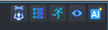
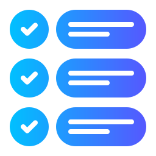
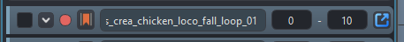
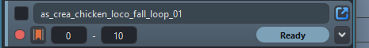
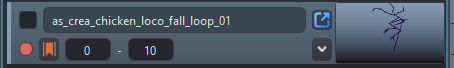
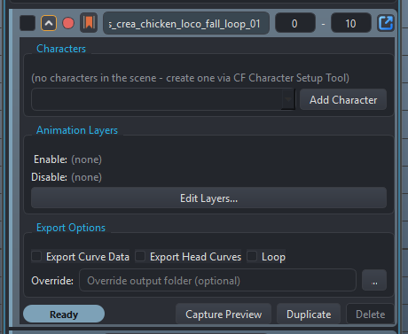
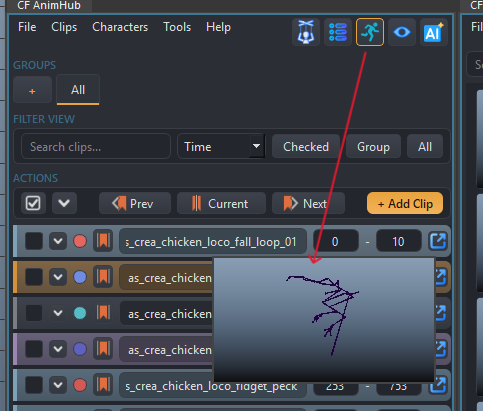
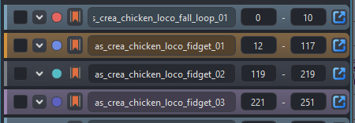
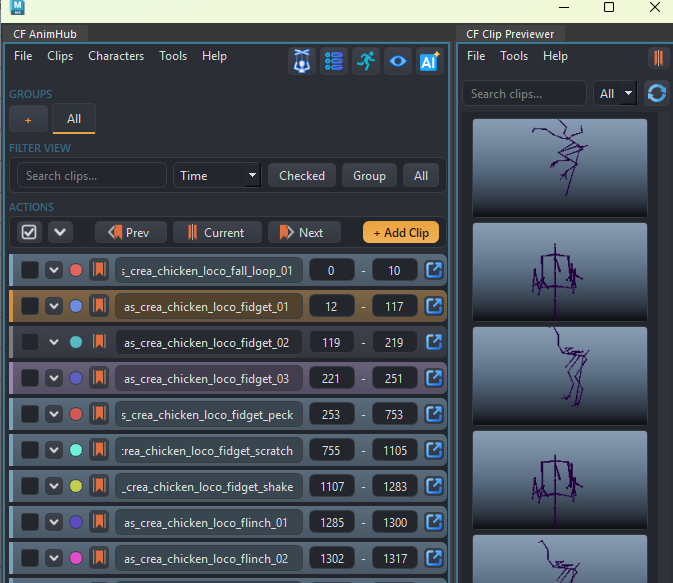

AnimHub
dcc/maya/animation/animhub/main_window.py —
CFAnimHubWindow (WINDOW_OBJECT_NAME = "CF_AnimHubWindow"),
launched from Animation > AnimHub. The clip/take
manager and FBX export pipeline — the largest application in the
suite, and a clean-room reimplementation of an animation-clip workflow,
informed by years of real production use of a previous, unrelated
pipeline rather than a port of its code.
Animators working across a large scene need to manage many independent playback ranges on one shared timeline - preview, retime, and export a subset without losing track of what's finished, what's still in progress, and what shouldn't ship. Ad hoc timeline bookmarks and manual FBX exports don't scale past a handful of ranges, and don't carry export metadata (which character, which path, which animation layers) with them.
Model a "clip" as a first-class, named window into the shared timeline - not a separate file, not a separate layer - carrying its own status, per-character export targets, animation-layer scoping, and preview data as real attributes on a real scene node. Two-way, deliberately non-live sync bridges to Maya's native Time Editor, Bookmark Editor, and Game Exporter mean the tool interoperates with Maya's own systems rather than replacing them outright.
A batch of clips can be previewed, retimed, reorganized into groups, and exported to a configurable project convention without ever leaving one window - and because the AI Companion is bound with a curated API scoped to exactly this data model, natural-language requests ("de-overlap these clips with a 2-frame gap and bake the result") become constrained, reviewable scripts instead of manual, error-prone timeline surgery.
Sync with Time Editor, the Bookmark Editor, and Game Exporter is deliberately one-shot, not live - each direction is an explicit, user-triggered action, never a background link that could silently drift out of sync.
Core concept: what a clip is
A clip is a named window into Maya's single shared timeline
— start/end mark a frame range on the one timeline
every clip shares. It is not a separate animation layer, and not
a separate file per clip. This distinction matters everywhere in the app:
pushing a clip to the Time Editor, baking anim layers, and exporting FBX
all operate on "this range of the one timeline," not on any kind of
isolated take container.
Clip data model
A clip lives on a native Maya network node carrying a set of
CF_Clip* attributes (schema.py), applied generically by a
declarative AttrSpec table (same pattern as
character/schema.py) — adding a field means editing that
table, not hand-writing another cmds.addAttr call.
| Attribute | Kind | Purpose |
|---|---|---|
CF_ClipName / CF_ClipStart / CF_ClipEnd | string / long / long | Name and frame range. Real Maya long attributes, not string-encoded ints. |
CF_ClipStatus | enum | Ready InProgress Ignore |
CF_ClipChecked | bool | The export-batch checkbox. |
CF_ClipColor | double3 | Row color swatch. |
CF_ClipGroups | string (CSV) | Membership only — see Groups for why this alone doesn't make a group real. |
CF_ClipHub | message | Connection to the singleton hub node (CF_AnimClipsHub), which also holds CF_ClipGroupOrder — the group registration list. |
CF_ClipBookmark | string | The paired timeSliderBookmark node's name — see Bookmark sync for why this is a plain string, not a connection. |
CF_ClipExportChars (compound, multi) | {char_uuid, enabled, path} | Per-character export slots — one clip can target several characters. char_uuid matches CFCharacter.uuid, not a node name, so a slot survives a character rename. |
CF_ClipEnableLayers / CF_ClipDisableLayers | string (CSV) | Anim layer names to force on/off at export — see Anim layer scoping. |
CF_ClipExportCurveData / CF_ClipExportCurveDataHead | bool | Schema/UI fields, not currently acted on by the export pipeline — a previous pipeline's version of this feature was specific to a rig system this project has no equivalent of, so this stays a deliberate, documented gap. Gap |
CF_ClipLoop | bool | Stamped onto the exported FBX as a keyed custom attribute (CF_Loop) — see Export pipeline. |
CF_ClipOverridePath | string | Clip-level export path override — wins over any per-character-slot path. |
CF_ClipGroups CSV is just membership. A group name only
becomes real (orderable, eventually a UI tab) once it's
separately registered in the hub's CF_ClipGroupOrder.
Tagging a clip with a never-registered group name does nothing visible
by itself — see Groups.
Start here Main window tour
What you're looking at the first time you open CF AnimHub — menu bar down to the bottom bar, top to bottom.
Menu bar
File (Import/Export Clips), Clips (Import from Bookmark Manager, batch rename, groups manager, a Clip Preview submenu — Enable Clip Preview / Generate Missing Previews / Delete All Previews, grouped together), Characters (character hierarchy view, panel toggle), Tools (Time Editor sync, Game Exporter sync, Clip Previewer, Clip Shuttle, background export, and Ask AI), Help.
Character panel
Sits under the menu bar, above the toolbar; hidden by default, toggled from Characters > Display Character Panel.
FILTER VIEW bar
Search box, a sort/filter combo (by start frame, by name, or filtered to one status/checked-state), and three range buttons (Checked / Group / All) that set Maya's timeline range to span whichever clip subset.
Group tabs
One tab per registered group plus "All" and a "+" to create a new one; switching tabs filters the clip list, it does not rebuild per-tab widgets.
ACTIONS bar
Check All / Expand All toggles, Prev/Current/Next navigation (native reimplementation against the sorted clip list, not Maya's own bookmark-plugin navigation), and + Add Clip.
Clip rows
One per clip, in Optimized, Compact, or Preview style (Settings > AnimHub > Interface) — see Clip row anatomy for the full breakdown.
Bottom bar
Export FBX.
Corner toolbar
Five icon-only buttons sit in the menu bar's own top-right corner — left to right: Character Panel toggle, Clip Style cycle, Preview toggle, Clip Previewer launch, and Ask AI.

Character Panel
Shows/hides the character hierarchy panel under the menu bar - same toggle as Characters > Display Character Panel.

Clip Style
Cycles every row between Optimized, Compact, and Preview - see Clip row anatomy below.
Preview Toggle
Enables/disables the ambient hover-preview popup for the whole window - see Hover preview popup.
Clip Previewer
Opens the standalone gallery window - see Clip Previewer (gallery window).
Ask AI
Opens the shared AI Companion, bound with AnimHub's own curated API - see AI Companion integration.
Clip row anatomy
clip_row_widget.py's ClipRowWidget is the single
most-interacted-with piece of UI in the app — one instance per clip,
rebuilt from scratch on every filter/sort/refresh (not diffed/reused).
It's one parametrized class covering all three row styles, not three
separate widget files — AnimHub has no legacy-file-pairing
constraint forcing a split the way some ported UIs do.
ClipRowWidget(clip, style="optimized", initial_expanded=False, parent=None)Signals: changed() (any field write),
filterRelevantChanged() (only for edits that could move the row
in/out of the current filter/sort — checked, name, status;
deliberately not fired for start/end, since a spin box fires
per-keystroke while focused and rebuilding the row list mid-edit would
yank focus away), expandedChanged(clip, bool),
duplicateRequested(clip), deleteRequested(clip),
exportRequested(clip) (export just this one clip, regardless of
its checked state).
The three styles
- Optimized — single-line collapsed header: check glyph, expand chevron, color-dot, sync button, name field, start/end spin boxes, an export button. No status pill until expanded.
- Compact — two-line collapsed header (built for long names): row 1 is checkbox + full-width name + export button; row 2 is color dot, sync, start/end, a status pill, and the chevron.
- Preview — the compact header's two-line layout,
minus the status pill (freeing that space), plus a persistent small
thumbnail (
thumbnail_render.HoverPreviewThumbnail) docked at the row's right edge. Hovering that thumbnail always animates the captured frame sequence in place — independent of the ambient hover-popup setting described below, since the two would otherwise compete for the same hover.

Maximum density - one clip per line, nothing but the fields you need to scrub and check off a long list quickly.

Trades density for readability - a full-width name field for long clip names, and the status pill visible without expanding the row.

Swaps the status pill for a persistent thumbnail - built for visually scanning a list once clips actually have captured preview frames.
Expanded body (same for all three styles, toggled by the
chevron): three sections, each its own QGroupBox with an
explicit dark background (a bare QGroupBox is transparent, and
the row's own status-tinted gradient would otherwise bleed through it):
- Characters — one row per export-character slot
(
character_export_row.py, see Clip data model), plus an "Add Character" row (combo of not-yet-added scene characters + button). - Animation Layers — read-only Enable:/Disable:
summary plus an "Edit Layers..." button opening
ClipAnimLayerAssignDialog(see below). - Export Options — Export Curve Data / Export Head Curves (disabled unless curve data is on) / Loop checkboxes, plus an override-path field + browse button.
- An actions row at the bottom: (Optimized/Preview only, since those styles' headers have no room for it) a status pill, then Capture Preview / Duplicate / Delete.

All three sections at once, plus the actions row - Ready status pill, Capture Preview / Duplicate / Delete.
Current-clip highlighting
Driven externally, not by anything inside the row itself:
the main window registers a timeChanged scriptJob and, on every
fire, calls
widget.set_current(widget.clip.start <= cur <= widget.clip.end)
on every visible row. set_current() just flips a flag and
re-tints the card — there's no scriptJob or timer living inside
ClipRowWidget itself. "Current" overrides the status-color tint
outright (not blended), so it's unmistakable rather than competing with
the status signal — matching the same precedence the interaction
pattern this was adapted from uses.
Ctrl-drag scrub / Alt-click play-once
A custom event filter installed on the row and every direct header child widget — explicitly excluding anything inside the expanded body, since the body's sections rebuild their children dynamically (a filter installed once at construction would go stale) while header widgets never change identity after construction.
- Ctrl+click-drag on the header scrubs: syncs the timeline to the clip's range, then converts horizontal mouse movement to frame movement (4 pixels per frame), clamped to the clip's own start/end.
- Alt+click syncs the timeline and plays once
(
cmds.playbackOptions(loop="once")+cmds.play(forward=True)).
Hover preview popup
For Optimized/Compact rows (Preview style has its own always-on
thumbnail instead): once the corner toolbar's Preview Toggle is enabled,
hovering any row starts a delay timer (Settings
> AnimHub > Interface's preview delay, default 1200ms), then shows
a small floating ClipPreviewPopup
(clip_preview_popup.py) near the cursor, animating back
through the clip's own captured preview frames right where the cursor is
— a quick way to check what a clip actually looks like without
scrubbing the timeline or leaving the row list.

Preview Toggle (highlighted, corner toolbar) is on, so hovering
as_crea_chicken_loco_fidget_01 pops the cached preview frames right over the row
— no scrubbing or opening a separate window needed.
Playback speed itself is also a live, user-adjustable setting rather than a hardcoded frame rate — see Clip preview thumbnails below for the fps default and how it's applied. A second watchdog timer polls whether the cursor is still actually over the row every 250ms — a deliberate backstop, since Enter/Leave events aren't always reliably delivered crossing child widgets, or into Maya's native viewport. The same watchdog-poll pattern is used independently by the gallery tiles in Clip Previewer for the same reason.
Assigning enable/disable layers
anim_layer_dialog.py's ClipAnimLayerAssignDialog(enable_names,
disable_names, parent=None) — a three-column drag-and-drop shuttle
(Disable | Available | Enable), distinct from
AnimLayerBakeDialog (which bakes
layers down before a Time Editor push; this dialog only assigns
which layers get enabled/disabled at export time, never bakes anything).
It has no knowledge of CFClip at all — purely two lists of
layer name strings in, two lists out (.enable_layers() /
.disable_layers()), so it's reusable independent of the clip row
context. A layer name the clip already references that's no longer in
the scene still round-trips through unchanged, marked "(not in scene)",
rather than being silently dropped.
Status pill
status_chip.py's StatusChip(status, parent=None) — a
small capsule button; clicking cycles
Ready →
InProgress →
Ignore → Ready. Emits
statusChanged(new_status) on a user click-cycle only
(set_status() itself doesn't emit). Its label/color lookup
tables are keyed by ClipStatus.value (a plain int), never the
enum member object.
schema.py redefines
ClipStatus as a new class, so a dict keyed by the old
enum member object goes stale (Enum equality is identity-based) and
raises KeyError on the very next status read anywhere else in
the app. .value is a plain int and survives a reload
unaffected — the same pattern clip_row_widget.py uses for
its own status-color lookup.
What the colors mean
Every clip row carries two coordinated color cues — a thin stripe down its left edge, and a subtle full-card background tint blended from that same color — so a row's state reads at a glance without needing to open it or read the status pill's text. Only one color ever wins: current-clip overrides status outright (see Current-clip highlighting above), it never blends with whatever status color was showing.
Ready #7da1b7
This clip's animation is finished and expected to export cleanly. Light grayish-blue — deliberately calm, not a loud "go" green, so a list full of finished clips doesn't visually shout.
InProgress #d1913d
Still being worked on. Muted amber-orange — the same "attention, but not urgent" language the rest of CoreTools' theme reserves for its accent color.
Ignore #7a7d84
Excluded from export. Rendered as a flat neutral gray with no tint at all on the card background (only the status pill/stripe carry the color) — a row you're not exporting is meant to visually recede, not compete for attention.
Current clip #9c85b0
The playhead is somewhere inside this clip's frame range right now. Muted mauve/lilac — deliberately not reusing any other color in the palette, since this needs to read as its own, unmistakable signal. Applied at a stronger blend than status tints get, and always wins over whatever status color the row would otherwise show.
Driven by clip_row_widget.py's
_refresh_card_style() — the stripe uses the color at full
strength, the card background blends it into the row's normal
gray gradient (theme.mix_color()) at a lighter ratio so the
tint reads as a wash, not a solid fill.
That status tint is independent of the small round dot
at the very left of each row - the dot is a per-clip
custom color swatch (CF_ClipColor, set via
"Set Color for Checked..." or clips.set_color()), not a
status indicator. A clip can be Ready
and carry its own custom dot color at the same time - useful for
grouping clips visually by character, sequence, or any convention a team
wants, on top of (not instead of) status:

Four different clips, four different user-assigned dot colors - independent of whatever each clip's own status happens to be.
Time Editor integration
time_editor_sync.py — reads and writes Maya's own Time
Editor clips, independent of any Time Editor panel being open (confirmed
live: pure node/attribute queries via
cmds.timeEditorTracks/timeEditorClip, no UI/panel state
needed for reading).
Reading: TE → AnimHub
Tools > Sync Clips to Timeline Editor reads whatever's currently in the Time Editor and creates/updates matching AH clips by name. This is a one-time snapshot, not a live link — a later Time Editor edit has no effect on the AH clip until Sync is run again. Time Editor is treated as the source of truth for this direction.
TimeEditorSyncDialog(te_clip_count, existing_ah_clip_count,
parent=None) is the options prompt: a label reporting how many Time
Editor clips were found; if AH already has clips, a radio choice between
Add/Update (default — merge into existing AH clips by
name match) and Replace All (clears every existing AH clip
first); and always a second radio choice between Keep Animation in
Time Editor (default) and Bake Keys Back to Scene
(restores real scene keyframes for the ranges just adopted, via
timeEditorBakeClips, then removes the TE clips).
Writing: AnimHub → TE
Tools > Push Clips to Timeline Editor
(push_clips_to_time_editor) creates one Time Editor clip per AH
clip, all driven from a single timeEditorAnimSource
built from the current selection — or, if nothing is selected, from
every animated object in the scene (list_animated_objects(),
which correctly traces through anim-layer blend-node chains to the real
driven transform, not just immediate curve connections).
Hierarchy expansion: an explicit selection is expanded to
include every descendant transform/joint (_include_hierarchy)
before pushing. Without this, selecting just a rig's root and pushing
left every child joint's keys untouched by the resulting clip's own
retiming in the Time Editor.
Anim Layer check before push: if any selected object has a genuinely anim-layer-driven attribute, a dialog offers to bake the layers down first — see Anim Layer detection and baking.
push_clips_to_time_editor_batched): an earlier version split
the push across many single-object batches, specifically to dodge a
confirmed intermittent hang in Maya's own
timeEditorAnimSource -addSelectedObjects command on one
large/complex production rig (60 objects worked once then hung later at
the same size; only calling it one object at a time was 100% reliable
across 144 controls, zero failures). That batched path is not the
default — the single-call version above is, since batching
fragmented every normal push into one clip per object, needing a second
grouping pass (group_clips_by_name) just to be usable again.
Kept available for the pathological large-rig case, callable directly,
but not wired into the UI.
Bookmark sync
Every AH clip gets a paired Maya timeSliderBookmark node
(bookmark_sync.py), kept live-synced (name/start/end/color) on
every edit to the clip — so Maya's own native Bookmark Editor and
timeline ruler always reflect the current clip list.
CF_ClipBookmark),
not a connection. Confirmed live: deleting a
timeSliderBookmark node cascades to delete anything
connected to it, in either direction, even a single non-message-type
connection. A connection-based design would let a user deleting a
bookmark in Maya's own Bookmark Editor silently delete the paired AH
clip too — the string-plus-explicit-setAttr design avoids
that entirely; deleting the bookmark only orphans the string reference,
never cascades into the clip.
A marker boolean attribute on every AnimHub-generated bookmark
(is_ah_generated_bookmark()) lets other code (notably
the one-shot bookmark importer)
distinguish AH's own shadow bookmarks from a user's real,
independently-created ones, robust even if the owning clip was later
deleted outside the normal API.
If a bookmark already has an existing connection from some other tool (e.g. a legacy pipeline's own bookmark-driven navigation system) when AnimHub takes it over, that connection is force-broken rather than left in place — AnimHub always takes full ownership of a bookmark it's synced to.
Anim Layer detection and baking
anim_layer_bake.py — used before a Time Editor push (and
available generally) to detect and optionally flatten anim-layer-driven
animation.
- Genuine-layering detection:
cmds.animLayer(addSelectedObjects=True)creates a blend node for every keyable attribute of an object regardless of whether that specific attribute is actually keyed on the layer. The real signal is whether the blend node's.inputBhas an incoming connection —find_animlayer_driven_attrs()checks that, not mere blend-node presence, to avoid false positives. - Multi-layer stacks: walks
inputArepeatedly to find every layer in a stack, not just the topmost one — a real bug this fixes was a deeper locked layer going undetected because only the first blend node was ever checked. - Locked layers:
find_locked_layers()surfaces which genuinely-layered layers are locked, so the bake dialog can offer to temporarily unlock them (re-locking afterward, in afinally) rather than silently failing to bake a locked layer's contribution. - Baking:
bake_animlayers_for_objects(objects, start, end, unlock_layers=())runscmds.bakeResults(..., removeBakedAttributeFromLayer=True, removeBakedAnimFromLayer=True, ...), only unlocking (and later re-locking) exactly the layers it actually had to unlock.
animhub/anim_layer_bake_dialog.py (AnimLayerBakeDialog)
is the CF UI for this: shows the affected attribute count and any locked
layers, with a "temporarily unlock these layers for this bake" checkbox
(unchecked by default), and Bake & Continue / Continue Without Baking /
Cancel.
Scene retiming
scene_retime.py's normalize_start_to_zero(objects=None)
shifts every keyframe on the given objects (or every animated object in
the scene) so the earliest key lands at frame 0, in one pass
over the underlying animCurve nodes — not per-object. This exists
specifically because a naive two-pass approach (shift once via each
object's own transform, once via the animCurve nodes directly) shifts the
same underlying curve twice through two different paths, silently
doubling the offset. This is exposed to the AI Companion as
clips.offset_all_keys_to_start_at_zero() — see
ClipsAPI.
Export pipeline
export_pipeline.py — given a clip and its
export-character slots, resolves an output path, sets up scene state, and
calls Maya's FBXExport.
Path resolution order (first match wins):
clip.override_path(a folder), if set — wins over everything.- The slot's own explicit path (a full file path).
- Project-root convention:
<project_root>/Animations/<CharacterExportName>/<CharacterExportName>_<ClipName>.fbx, viacore.project.get_project_root(). - If no project root resolves, Settings > AnimHub > Export's "Global export folder."
- Last resort:
<scene_dir>/fbx_export/<...>.fbx.
mel.eval() — confirmed live that an unnormalized Windows
path gets silently corrupted by MEL's own escape-character parsing,
causing an export that reports success while writing to the wrong
location.
Settings >
AnimHub > Export is also where tier 3's
project root mode (Maya Project / P4 Workspace / Custom) is configured
— it used to live on the generic Settings > Project page, but moved
here since this export path resolution was always its only real consumer.
It still reads/writes the exact same "project"
config keys core.project.get_project_root() itself reads,
regardless of which UI wrote them — only the control surface moved,
not the underlying shared config.
Bake-at-origin (a character with
bake_mode == BakeMode.ORIGIN): duplicates the export
hierarchy, unparents it, parentConstrains the duplicate back to
the original, bakes only the duplicate's root transform channels,
deletes the constraint. This captures the original's real world-space
motion into the parentless duplicate's local channels — it does not
"zero the root," which would erase motion rather than re-origin it.
Children keep their existing local (skin/rig-driven) animation untouched.
World-mode characters (the default) export the real node directly, no
duplication.
FBX flags: no input connections, no cameras/lights, no constraints/instances/smoothing groups, bake complex animation at step 1, split into takes.
File Type (ASCII/Binary) is a Settings > AnimHub > Export control too, defaulting to ASCII. This pipeline embeds real per-clip metadata onto the exported node (the Loop flag below), and ASCII keeps that inspectable/diffable the way this pipeline is meant to be used — switching to Binary shows a confirmation first (reverts to ASCII if declined) rather than silently changing it. Binary is still fully supported once confirmed.
Loop flag: clip.loop gets baked onto the exported
node as a keyed boolean custom attribute (CF_Loop), keyed at
both start and end (even though constant) because FBX's
bake-complex-animation step only reliably exports attributes that
actually have keyed animation.
Perforce: if P4 is available, add_or_checkout()s
the output path before writing.
Entry points: export_clip(clip) (one clip, every enabled
slot), export_clips(collection, force_all=False, on_progress=None)
(batch — defaults to collection.checked(), or every
non-Ignore clip if force_all=True).
Anim layer scoping at export
layer_manager.py maps a clip's
enable_layers/disable_layers onto real animLayer mute
state, scoped to just the layers named — every other layer's
mute state is left untouched. If a layer name appears in both lists,
disable wins (applied second, unconditionally).
LayerScope(clip) is a context manager: snapshots every layer's
mute state on enter, applies the clip's config, and restores the exact
snapshot on exit (even on exception) — export_clip() wraps
its whole per-character-slot export loop in this, so an export never
leaves the scene's layer visibility changed afterward.
Clip preview thumbnails
clip_preview.py captures small (220x124) JPEG frame-sequence
playblasts per clip for the hover-preview thumbnail — separate from
any full-resolution review playblast. Requires the scene to already be
saved (previews live at <scene_dir>/_previews/<clip_name>/) —
the most common capture_preview() failure. Old frames are
deleted before a new capture, so a shortened clip doesn't leave orphaned
trailing frames from a longer previous one.
thumbnail_render.py composites a source frame into a
rounded-corner thumbnail (compose_thumbnail_pixmap) — a
QLabel stylesheet's border-radius only rounds the
label's own background, not a pixmap drawn on top, so this does the
rounding itself onto a real-alpha QImage.
HoverPreviewThumbnail is the reusable widget (used both inline
in a clip row and in the Clip Previewer's gallery tiles) that animates
through captured frames on hover, sharing one playback speed with
ClipPreviewPopup so nothing descended from either runs at a
different cadence.
clip_preview.frame_interval_ms()
reads it fresh from UserConfig on every call, no caching;
both ClipPreviewPopup.start() and
HoverPreviewThumbnail.start_animation() re-read it and
re-apply it to their own QTimer via setInterval()
at the START of every hover, not just once at construction — so a
Settings change takes effect on the very next hover in an already-open
window, no RefreshCoreTools or Maya restart needed. This setting
replaced a series of hardcoded passes (80ms → 33ms → 16ms →
19ms) before it became clear this just needed to be a real,
user-facing setting.
Clip Previewer (gallery window)
clip_previewer_window.py — CFClipPreviewerWindow,
opened from Tools > Clip Previewer or the corner toolbar's
dedicated launch button. A standalone dockable gallery view (search +
group filter, a responsive grid of preview tiles) as an alternative to
AnimHub's own text/field-dense row layout. Reads the same scene clips
(model.ClipCollection) but is fully decoupled — neither
window owns the other, and both read the same scene-level group registry
so a group created in AnimHub's own
Groups dialog shows up here automatically (this
window can filter by group, not create/rename/delete one).

The Clip Previewer (right) is a separate top-level window, not a panel bolted onto AnimHub (left) — each tile mirrors one row's clip and renders the same captured preview frames as the row's own hover popup, just larger and always visible instead of appearing on hover.
Each tile is a ClipPreviewTile(clip, size, parent=None)
(clip_preview_tile.py) — a bigger, click/right-click-driven
sibling of the row's own "Preview"-style inline thumbnail, sharing the
same thumbnail_render.HoverPreviewThumbnail rendering/hover-animation
logic rather than reimplementing it. Left-click emits
syncRequested if the clip already has a preview, or
generateRequested if not ("click to generate"); right-click
offers Sync Take / Generate Clip Preview / Delete Preview
(shown-but-disabled without a preview) / Export (calls
export_pipeline.export_clip directly).
This window's own Tools menu also has scene-wide "Generate Missing Previews" / "Delete All Previews" — the same two actions AnimHub's own Clips > Clip Preview submenu offers, operating on the same collection either way. Both always operate on the entire scene collection regardless of the current search/filter, so a maintenance sweep's definition of "all" doesn't silently depend on whatever's typed in the search box.
The grid's column count recomputes on every resize based on the actual scroll-area width — a wide floating window shows several tiles per row, a narrow docked panel collapses to one column.
Groups
Clips > Manage Groups opens ClipGroupsDialog
(groups_dialog.py) — a three-column shuttle (All Clips |
Groups | Clips in Group) for creating/renaming/deleting groups and
managing membership, with independent filters per column. Every action
writes through immediately, same live-write convention as the rest of the
app. "All" is reserved and can't be used as a group name.
Deleting a group only removes clip membership in it — clips
themselves are untouched.
Remember the two-layer model from
Clip data model: this dialog is the only
place group registration (what makes a group a real, orderable
tab) happens — tagging a clip's CF_ClipGroups elsewhere
(including via ClipsAPI.add_to_group()) never creates the tab
by itself.
Batch rename
Clips > Batch Rename (batch_rename_dialog.py)
— prefix, suffix, find/replace (literal or regex), and optional
zero-padded sequential numbering. Operates on checked clips if any are
checked, else every clip. The core renaming logic,
apply_rename(name, index, params), is a pure function with no
widget/clip dependency — order of operations is find/replace first,
then prefix+name+suffix, then (if enabled) the sequential number appended
last. Invalid regex is caught and silently no-ops for that clip rather
than raising.
Clip Shuttle (floating nav bar)
Tools > Clip Shuttle (clip_shuttle_dialog.py)
opens a small, frameless, translucent, always-on-top pill mirroring the
main window's Prev/Current/Next/Checked/All actions, so you can scrub
clips without the full AnimHub window in the way. It's a thin remote
control — every button delegates straight to the owning main window's
own methods, it doesn't reimplement any nav/range logic itself. Non-modal
(.show(), stays open alongside the main window).
Import/export clip metadata
File > Import/Export Clips (clip_io.py)
snapshots/restores clip metadata (name, range, status,
checked, color, groups, layers, loop, curve-data flags, override path) to/from
a plain JSON file — distinct from FBX export, which writes animation
data, not this app's own bookkeeping. Import matches an existing clip
by name only (no uuid/node matching) — creating a new
clip if no name match is found, otherwise updating the existing one's
fields in place. Renaming a clip between an export and a later import
will create a duplicate rather than update the original clip.
Background (headless) export
Tools > Export Clips FBX on Background launches
tools/headless_export_clips.py as a genuinely separate
mayapy subprocess (not Maya's own background evaluation) via
QProcess, streaming output into a live console and a
timestamped log file. The scene must already be saved (you're prompted to
save first). The headless script opens the saved scene fresh, exports
every checked clip (no force_all option here), and
writes a JSON results summary the main window reads back for a final
success/failure dialog.
One-shot bookmark import
Clips > Import from Bookmark Manager...
(tools/sync_clips_with_bookmarks.py) is a
one-directional, one-shot migration utility: reads every
real timeSliderBookmark in the scene and creates a new AH clip
for any that don't already match an existing clip by name, best-effort
copying the bookmark's color too. It explicitly skips AnimHub's own
generated bookmarks (via
bookmark_sync.is_ah_generated_bookmark()) to avoid
re-importing AH's own shadow bookmarks as duplicate clips. This is
not an ongoing sync — re-running is safe
(already-matched names are skipped), but nothing here keeps bookmarks
and clips linked afterward.
Each newly created clip adopts the bookmark it was imported
from (bookmark_sync.adopt_bookmark_for_clip()) rather
than getting its own brand-new one. CFClip.create() (used
internally by collection.add()) always makes its own bookmark
unconditionally via ensure_bookmark_for_clip() — without
the adopt step, that left two identical-looking bookmarks (same
name/range) sitting side by side in Maya's own Bookmark Manager after
every import, a real reported bug. The redundant auto-created one is
deleted immediately after the real one is adopted.
Game Exporter integration
Tools > Game Exporter > Import Clips from GE / Push Clips to
GE (game_exporter_sync.py) — one-shot,
one-directional syncs with Maya's own built-in Game Exporter (Windows >
Animation Editors > Game Exporter), matching the same non-live
convention as the bookmark import
above.
cmds.gameFbxExporter command and
no Python module at all — confirmed directly against Maya's
own installed MEL source. Its clip list lives entirely as attributes on
a custom node type (gameFbxExporter, one node per preset
shown in its own preset dropdown), a multi-attribute array
.animClips[i] = {animClipName, animClipStart, animClipEnd,
exportAnimClip, animClipSrcNode, animClipId}. This is
read/written directly via plain cmds.getAttr/setAttr
— the same mechanism Maya's own Game Exporter UI code uses
internally. The node type's plugin (gameFbxExporter.mll)
isn't loaded by default — confirmed live it must be explicitly
loaded (cmds.loadPlugin("gameFbxExporter")) before the node
type is even recognized, the same requirement bookmark_sync.py
already has for timeSliderBookmark.
Import Clips from GE reads the first
gameFbxExporter node found in the scene and creates a new AH
clip for every entry whose name doesn't already match an existing clip
— same skip-on-collision convention as bookmark import. No node in the
scene yet means nothing to import (not an error).
Push Clips to GE opens a small dialog
(GameExporterPushDialog) asking which clips to push —
All Clips (the default) or Checked Clips. Each
pushed clip is matched into the Game Exporter's list by name
— an existing entry's range is updated in place, a new one is
appended otherwise, so re-running is idempotent and never creates
duplicates. If no gameFbxExporter node exists yet, one is
created (named CF_GameExporterPreset, forced onto the Animation
tab) — an existing node's own export-type setting is left
alone. If the Game Exporter window happens to be open already, its own
clip list view is refreshed afterward.
 AI Companion integration
AI Companion integration
Tools > Ask AI opens the shared AI Companion panel and binds it with two objects scoped entirely to AnimHub's own domain, plus a "concepts primer" describing how to use them — full reference in ClipsAPI. The AI never gets raw, unrestricted access to the scene here: it can only act through these two curated, tested surfaces, and even then only after a human reads the proposed Python and clicks Run.
clips (ClipsAPI)
AnimHub's own clips:
clips.create()/clips.offset_all_keys_to_start_at_zero()/etc.
time_editor (TimeEditorAPI)
Maya's own, separate Time Editor clips (time_editor_sync.py)
— a completely different feature that just shares a similar
name. time_editor.list_clips() and
time_editor.resolve_overlaps() (de-overlaps every Time
Editor clip, preserving each one's own duration) are the only two
methods exposed.
cmds.timeEditorClip/timeEditorTracks flags on
every freehand attempt. The primitive itself had a real bug in its
first version too: repositioning via edit-mode
trimStart/trimEnd reports the right boundary
numbers but silently corrupts the clip's actual playback (those flags
are relative to the clip's ORIGINAL creation anchor, not its current
position — moving it far enough samples past its real keyed
range into frozen hold/extrapolation instead of the real animation).
_move_clip() was rebuilt around
delete-and-recreate-from-the-same-anim-source instead, this time
verified by sampling actual driven attribute values before/after a
move, not just boundary numbers.